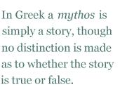

Every semester I teach a section in Classical Mythology at Hunter College. It provides a general survey of the most important Graeco-Roman myths, while touching on some broader questions of religion, anthropology, and ancient history. Students as a whole love the class, and it is a staple offering of our department.
I say “as a whole,” because there are two significant exceptions. The first are a few hard-boiled science and business majors, who have a strong disinclination to waste time on anything that is non-verifiable, non-quantifiable, or non-profitable. I privately call these students the Bottom-Liners. And the second are religiously devout students of the Protestant persuasion, who are temperamentally hostile to anything that smacks of “paganism.” I privately call these students the Pulpit-Pounders.
It’s an interesting division. On the one hand we have the secular empiricists, who will not deal with what they cannot touch and measure, and on the other hand we have the fundamentalists, who out of a fanatical narrowness refuse to countenance any non-Biblical accounts of the world. Bottom-Liners and Pulpit-Pounders — what a boring set of tightassed provincials, and how richly they deserve each other! Unfortunately both groups are highly influential in America.
Myths are the matrix of cultural self-understanding. In my view, future generations will see the greatest gift of the twentieth century to be not its technical achievements, but its rediscovery of the power, force, and enduring relevance of mythology to cultures that keep it alive through study and love. James Frazer, C.G. Jung, Mircea Eliade, Julius Evola, Joseph Campbell — these are the heroes who resurrected mythology and saved it from the shallow rationalism and scientism of the Enlightenment. They will be remembered and honored long after Rorty, Derrida, and B.F. Skinner are relegated to the obscurity of footnotes.
In Greek a mythos is simply a story, though no distinction is made as to whether the story is true or false. In fact, the true-false dichotomy would not have even occurred to anyone in the ancient world who used the word mythos. The myth was simply a narrative of events, and the narrative might be strictly factual, or it might be purely symbolic, or it might be both, in a way that is a little too paradoxical for most moderns to grasp. The important thing was that the myth was a vehicle for truth that was somehow inexpressible in the cut-and-dried terms of non-figurative expression.
There were, of course, simple people who took the myths in an absolutely literal sense, like the Pulpit-Pounders in my class who take the Genesis account of creation literally. But there were many more people who saw the myths as human attempts to encapsulate and epitomize deeper truths about gods, men, the world, and the complex relationships that existed among them. These more sophisticated persons could even devise myths of their own on occasion, as Plato did in the Republic with his very influential myth of Er and the afterlife, or the one on the origins of sexual desire that he puts in the mouth of Aristophanes in the Symposium.
For poetry, myths supply an almost inexhaustible source of material for subject matter. In some instances a poem is just a retelling of the inherited myth in modern language, and in those cases the value of the poem is probably limited to the technical virtuosity of the poet. But in other cases the poet uses the inherited story to make some new point, or to adumbrate some radical idea. These poems are intrinsically more interesting than the former, because they show how the roots of a culture are still alive, bringing sustenance from the past to nourish the present.
Consider Yeats’s “Leda and the Swan.” The myth is a familiar one — Zeus changes into an animal and rapes some luckless girl. Yet Yeats manages to turn the myth into a powerful and unanswered question about how much human consciousness we have of the impersonal forces that move us like pawns on a chessboard, as well as pointing out that whatever happens to us as individuals has consequences far beyond our limited lifetimes and petty interests.
Or look at Tennyson’s dramatic monologue “Ulysses.” It picks up where the Odyssey ends, and gives the hero a new task — ”to strive, to seek, to find, and not to yield.” Here Tennyson expresses not just the latent energies of a vigorous old age, but the entire ethos of his time, with its restless urge to explore and discover and conquer and push onward. The ancient myth is made to serve the nineteenth century’s image of itself.
Or read Shakespeare’s “Venus and Adonis.” A tale from Ovid is transformed into a lush narrative so sexually charged and blood-flecked that even today it can’t be taught in backwater states like Utah and Oklahoma. Shakespeare turns the myth into a pastoral, erotic, and rhetorical riot of language, as complex and seething as the Renaissance itself. And it is probably deeply personal as well, reminiscent of his own seduction as a youth by the older Anne Hathaway.
This list could be extended indefinitely, but there’s no need to belabor the obvious. The point is this: myths are extremely potent catalysts for the creative energies of a poet, and they also provide an escape from the insufferable I-fixation of modern confessional poetry. Rather than talking about some stupid little epiphany that you had, you can connect your poetry with a trans-personal and trans-historical cultural reality that goes beyond the self.
Objections to the use of myth in poetry usually mask a leftist sociopolitical agenda, or a modernist aesthetic prejudice. In the latter case, the objection is rooted in a dislike of anything that intervenes between a poet and “experience” — this experience being a hypostatized abstraction that lays claim to the bogus credentials of “sincerity’ and “authenticity.” Using an ancient story to create a poem is verboten for those who adhere to this peculiar ideology.
Those with a leftist sociopolitical agenda reject myths precisely because such stories are links to a past that they are anxious to erase from modern consciousness. After all, a myth connects the human with the divine, and the earth with the heavens. If you are a secularist or a revolutionary or just another boring little progressive, you aren’t comfortable with a canon of stories that takes for granted a whole series of social, religious, and cultural assumptions that you despise. You want us to be liberated from the past. You want these myths to be forgotten. You want us to “move on,” as the cliché has it. Hence the ingrained disinclination that many modern editors feel for any poem that makes use of a mythic topos.
But the myths persist. They are rooted in our racial memories, just as our DNA is encoded in our cells. Good poets will continue to employ them regardless of the strictures of Bottom-Liners, Pulpit-Pounders, modernists, and leftists. After all, the myths are our cultural inheritance, and no one can tell us that we can’t make use of what is ours.
Joseph S. Salemi teaches in the Department of Classical Languages at Hunter College, C.U.N.Y. His poems, essays, translations, book reviews, and scholarly articles have appeared in over 100 print journals world-wide. He is an N.E.H. scholar, a winner of the Classical and Modern Literature Prize, and a four-time finalist for the Howard Nemerov Award. He has published three books of poetry, the latest being Masquerade (Pivot Press).